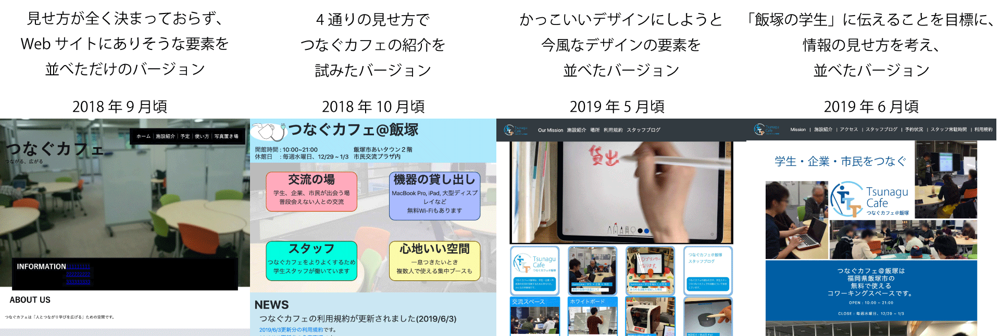

概要
バイト先のコワーキングスペース「つなぐカフェ＠飯塚」の公式webサイトを製作しました。(http://www.tsunagucafe.com/)
諸般の事情で、まれに見られない時があります。その際はすみませんがこちらを参照してください(https://tsunagusitetest.netlify.com/)

なぜ作ったのか
- 飯塚の大学生に、もっとつなぐカフェ＠飯塚に来てもらうために制作しました。
- つなぐカフェ＠飯塚は、飯塚の学生、企業、市民が顔を合わせる場所として作られました。イベントで一日顔を合わせて終わるのではなく、この場所で何度も顔を合わせる中で徐々に信頼関係を構築できる場所を目指しています。「学び」をコンセプトにして、学生、企業、市民が互いの知見を交換し、この場所で新たな学びを生むことでより交流できることを目指しています。
- このwebページでは、飯塚の活動的な学生、特に3通りのユースケースを考え、掲載しました。サイトを見た人が「ここなら作業が捗りそう」「ここなら人と交流ができそう」と思い、来ることを目指しました。利用の様子を想像しやすいために、実際の利用の様子の写真をたくさん用いました。
制作の際、人の意見を取り入れ改善していった話
人の意見を取り入れつつ、自分でも勉強しつつ、つなぐカフェ＠飯塚のWebサイトのデザインを改善していった話をします。

経験がない状態で、Webサイト制作を任されました
2018年9月ごろ、つなぐカフェ＠飯塚のWebサイトの制作を任されたとき、吉田にはほとんどWebサイト制作の経験はありませんでした。
当初は、手探りでWebサイトにありそうな要素を並べ、それっぽいものを作ろうとしていました。
が、ある時「紙みたいな簡単に書いたり消したりできるツールで、設計図を作って整理しないと」と助言を受けました。
今でしたら、iPad Proで書いたり、AdobeXDを使ったりして、人に共有やすい形で設計図を作ると思いますが、この時はとにかく紙に書いて整理し、その紙を人に見せ意見をもらうようにしました。
相談しつつ情報の見せ方を決め、公開に至りました
そして、2018年10月頃、Webサイトを公開しました。
この時は、アルバイト先の人たちと何度も相談し決めた4通りの見せ方で、つなぐカフェ＠飯塚の良さを伝えるように書きました。
このバージョンのサイトは、吉田のポートフォリオの
ここ
でも保存しています(ポートフォリオに掲載する許可を得て掲載しています)。
デザインに興味を持ち、勉強しました
このサイトを公開した後くらいから、「人に情報を伝えるためにデザインを考える」ことに興味を持ちました。
イベントの告知のフライヤーを制作するなど、様々なデザインに関する業務に自分から手を出し、勉強をしました。
制作したフライヤーは、吉田のポートフォリオの
ここ
にまとめています。
また、本も何冊も読みました。
特に「ノンデザイナーズ・デザインブック(第４版)(Robin Williams 著, 吉川典秀 訳,マイナビ出版)」は参考になる部分が多かったです。
情報の配置の仕方に困った際、まず最初にこの本に掲載せれているデザインの原則「コンストラクト、反復、整列、近接」を参考に考えます。
再び、Webサイトの制作を任されました
2019年5月頃、つなぐのサイトがかっこ悪いので作り直そうという話になり、吉田が仕事を任されました。
自分でも、いろいろ勉強した状態で見直すと、かっこ悪いと思う部分が多々あったので、願ってもない仕事でした。
はじめは「かっこいいwebサイトを作ろう」くらいの曖昧な目標設定で制作を始めたのですが、うまくデザインを決められず、非常にこまりました。
誰に伝えたいのかを明確にすることが大切だと気づきました
設計図やラフな実装を作り、人に見せる中で、そもそも誰に伝えたいのかがイマイチはっきりしないままに考えているから、うまくデザインを決められないのではないかと気づきました。
そこで、学生、企業、市民の中でも、つなぐカフェ＠飯塚の主な利用者として期待される「学生」に焦点を当て、その中でも特に活動的な学生に魅力が伝わるように、制作することに決めました。
誰に伝えたいのかを明確に決めた後は、スムーズにデザインを決め、人に見せつつ調整し、2019年の6月30日に公開にいたることができました。問題がなんなのかはっきりするほど、問題の解決は容易になるんだと身を以て経験できました。
用いたツールと、ツールを選ぶに至ったエピソード
- wordpressより機能が少ない分扱いが楽な「HOGO」という静的サイトジェネレータを用いています。
- wordpressの使い方が分からず苦戦していた折に、先輩からHUGOの話を聞き、興味をもちました。その先輩はHUGOの実際の使い方は知らなかったので、まずは自分で検索しつつ簡単なwebページを作ってみました。検索した際、wordpressよりも質の良い情報が比較的すぐにたくさん見つかったことや、機能が少ない分扱いが楽だと気づき、wordpressをやめてHUGOで開発することに決めました。
- なお、必要な機能やレイアウトを満たすテンプレートがなかったので、テンプレートから自作しています。
- 写真のちょっとした加工などには、使い慣れており、困っても検索すれば情報が得やすいPhotoshopやIllustratorを用いています。やりたい加工によっては、iPad版のAffinity Designや、iOSに最初から入っている写真アプリなども使いました。
- 例えば、道案内のための写真にベクターで矢印を引く際は、マウスカーソルで線を引くの難しいため、ApplePencilで画面をタップして簡単に線が引けるAffinityDesignを用いました。
- iOSに最初から入っている写真アプリは、手書きで線を引くだけなら軽くて使いやすく、また線の丸っこさが好きなので、ちょっと線を引く時などはよく用いています。
- また、バックエンドの実装にも吉田が関わっています(2019/8/30 現在進行形)
- 今はHerokuの無料プランで公開しているのですが、つなぐカフェ＠飯塚が持っているサーバーでこのページを公開しようという計画があります。計画の達成のため、物理サーバーにproxmoxで仮想マシンを立て、そこにNginXでサーバーを立てようという方向で進んでいます。
- 吉田は、NginXでwebサーバーの作成と、同じサーバーでこのページ以外にもwebページを公開するために、NginXでリバースプロキシーの作成などを行っています。